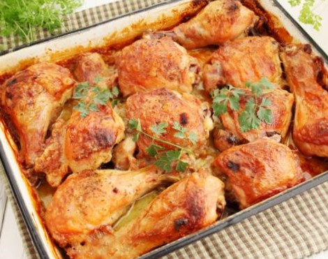
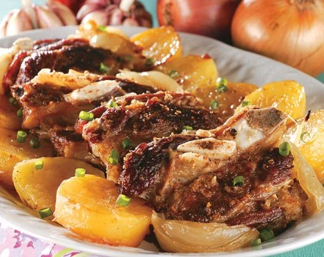
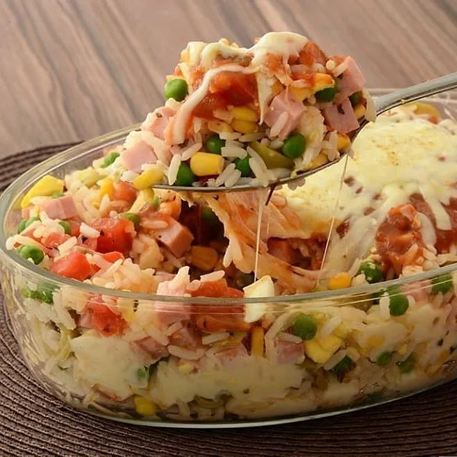

Jantar com a minha vó Terezinha
Frango assado:É aquela receita perfeita para o almoço em família! Ele rende bastante e pode ser servido com uma diversidade de acompanhamentos

Jantar com o meu pai Milton
Costela assada:Aquela costela macia, suculenta que derrete na boca, com aquela crostinha na parte de cima, e que ainda da para cortar de colher. Eu amo, principalmente quando é feito pelo meu pai com todo e carinho e amor.

Jantar com a minha mãe Simone
Arroz de forno:Confesso que eu amo quando minha mãe faz o arroz de forno , ela faz com uma sutileza e com temperos que somente ela sabe como faz ,a explosão de sabores é incrível e principalmente o carinho que ela coloca enquanto cozinha.